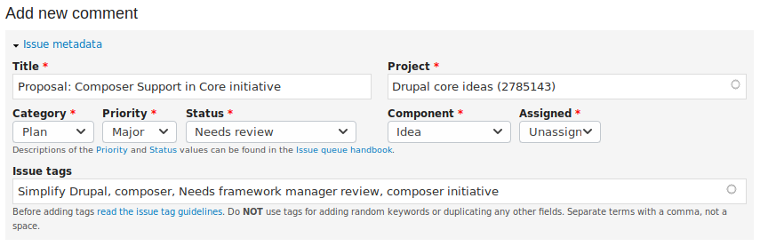

1st Time Contributing to Drupal
— with mparker17
Slides at mparker17.github.io/reveal.js-drupal_contributing/ Speaker notes at github.com/mparker17/reveal.js-drupal_contributing/blob/gh-pages/speaker-notes.html
Who am I?
- Matt Parker, mparker17 on Drupal.org, Github, and Gitlab
| Current employers | Former employers | Qualifications |
|---|---|---|
| Digital Echidna, Brady's Meat & Deli | Environment Canada, Versabanq, UWaterloo, PeaceWorks, Myplanet, OpenConcept Consulting |
Acquia Certified Drupal Developer, CS degree not completed at UWaterloo |
What do I know about contributing to Drupal?
- 10 years, 1 month on Drupal.org
- I used to write the Drupal 8 Core Updates occasionally.
- 52 commit mentions in Drupal 8.0 core, 3 commit mentions in Drupal 7 core
- I (co-)maintain 16 modules (plus ~15 sandbox projects).
- 445 commits to various modules, including Panopoly, Metatag, Examples, Environment Indicator, Search API Pages, Site Audit, and the Drupal.org theme Bluecheese.
- 17 people list me as a mentor on Drupal.org; I've trained/mentored ~32 co-op students in Drupal for my employers.
Other notable things
- I never completed a degree — no formal education
- I have 20 mentors listed on Drupal.org
- I'm a bit dyslexic
- ... the point is, I'm not really all that special, and a lot like you.
Why contribute?
People contribute to OSS for many reasons... here are some common ones:
- make the world a better place,
- help others in the same situation,
- all this software they got for free is paying their bills, and they feel like they should do something in return,
- want others to check their work (e.g.: for security),
- save themselves time in the future,
- establish a reputation to find work / get a better paying job,
- establish influence and become Thought Leaders,
- establish an industry standard and gain competitive advantage
How can I help?
You can still contribute to Drupal, even if you don't write code!
- support others, help other people contribute, connect people,
- organize events or help with them,
- train people, answer support questions, give demos,
- document, translate strings or documentation, write case studies,
- help design Drupal's UI,
- triage issues, plan work, manage contrib projects,
- test, write automtaed tests,
- help market Drupal, make a donation, vote in the community elections, write a case study, blog, etc.
If you can write code (or theme), you can contribute by writing patches to projects that already exist; or starting your own projects.
A project is usually a module, theme, distribution, or Drupal Core itself.Issue queues
The Drupal community collaborates mainly in Drupal.org's "issue queues".
An issue queue is just a list of things that need to be addressed for a given project, like JIRA tickets.
A project is usually a module, theme, distribution, or Drupal Core itself; but there are some "Community" projects that have no code: just a list of issues for people to collaborate on.
Community project examples: documentation, mentoring, Drupal.org infrastructure, Drupal.org content.Issues may be Plans, Tasks, Bug reports, Feature requests, or Support requests; they have a priority and status, can be assigned, and can be tagged with taxonomy.
There is a guide at drupal.org/issue-queueIssue metadata
The issues on Drupal.org have metadata which determines which queue they are in, which type, etc.
When you comment on an issue, you have the opportunity to change the issue's metadata at the top of the Add New Comment form.
 This is what the New Comment form's Issue Metadata section on drupal.org/node/2958021 looked like to me on 2019-08-01.Attributing your contributions
When collaborating in an issue queue, Drupal.org has a feature to let you attribute your contributions so you can give yourself / your employer / your client credit.
On the Add New Comment form, this is just below the Issue Metadata section.


When should I contribute?
- Volunteering?
- Volunteer when you have time.
- Don't burn yourself out! If you run out of time/energy, that's okay: the community can (usually) pick up where you leave off.
- At work?
- Easier to sell boss/client on contributing bug fixes.
- Developed something new?
- Ask permission from your boss/client to contribute it.
- Consider splitting some of the work on company time, some on your own time.
- Show off your latest project by writing a case study!
Where do I contribute?
- Drupal.org — issue queues and documentation
... or one of its sub-sites:- Groups.drupal.org — interest groups, meetups, general discussions/planning, design & UX work, marketing work
- Localize.drupal.org — translations
- Assoc.drupal.org — donations, elections
- Ask and answer support questions on drupal.stackexchange.com
- Chat with the Drupal community on Slack or IRC
- Meet the community in real life at events like this, by networking, BoFs, sprints, etc.
Frequently mentioned contribution barriers
- But I'm not experienced / smart enough / qualified to help!
- You're just as smart / qualified as the rest of us!
- Inexperienced people are better at identifying UX/DX problems than experienced people!
- But I don't know where to start!
- There are lots of tools/programs to help:
- Post that you are novice looking for suggestions about how to make your first contribution in #contribute (Slack) or #drupal-contribute (IRC)
- But I don't have enough time!
- Maybe your employer does!
- Some contributions are quick — and you'll get faster with practice.
- But Drupal.org limits how much I can post
- This means that you don't have the "confirmed" role
- Talk to me afterwards (or anyone with community role): we can confirm your user account
Thanks!
Resources, references, special thanks:
- Lucas Hedding's talk on How to Become Involved: Finding your place in the Drupal community presented at Drupal Camp Costa Rica 2015.
- Anna Kalata, Cathy Theys, Kevin Thull, Angie Byron, and Ronai Brumett's panel on Giving Back to Drupal - Without Writing a Line of Code at Twin Cities Drupal Camp 2015.
- Kaylen & Rob, for encouragement and reviewing my talk
- chx, Mixologic, and davidhernandez for their help on IRC.
- Emma Karayiannis's talk on Contributing to Drupal presented at DCNorth2015.
- Drupal.org documentation on Ways to get involved.